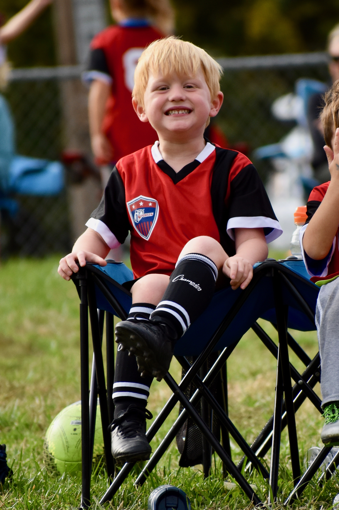
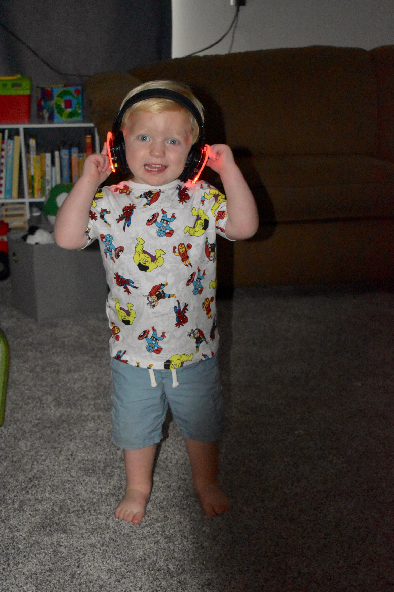
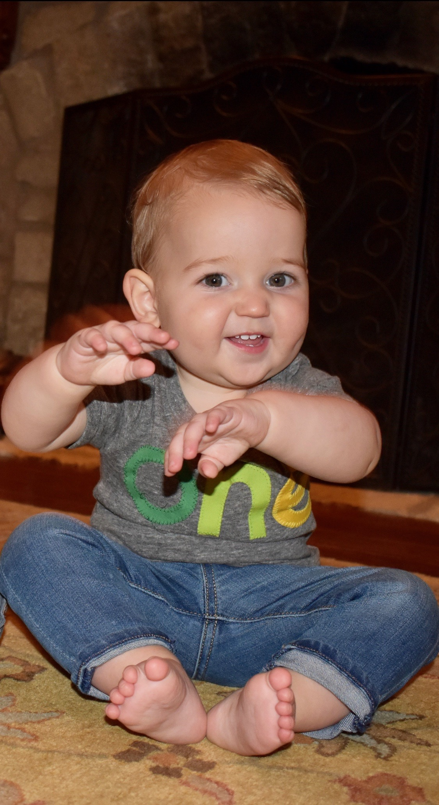

Chase
Chase Xavier was the first little blessing to join us on June 4th, 2015. He was the first newborn baby I had ever held, and his birth changed our lives forever. He turned 4 years old this year and his maturity is way beyond his age. Chase loves all dinosaurs, monster trucks, dragons, and danger. He is 100% boy. His sweet attitude is quick to melt your heart and his hugs can lift away all your pains. I am always impressed by his knowledge and willing to learn.
Judson
Judson Robert came into our lives 2nd on September 5th, 2017. I swear he came into this world laughing and not a thing has changed today. He is an absolute tornado and can destroy anything in his path. He is built like a tank and uses that to his advantage. He has the biggest personality of anyone I have ever met, and he is 2 years old. It is impossible to spend a night with him without a deep belly laugh and everyone needs those. Although he acts tough, he has such a sweet heart. He loves like there is no tomorrow and when he is tired, he gives the absolute best snuggles.
Paxton
Last but not least is Paxton Eric who joined the world October 1st, 2018. He is my brothers twin which makes him also look a lot like me. He has the biggest brown eyes and the sweet round cheeks with one little dimple. He lives in Dallas, TX but I still get to see him quite a bit. He has such a jumpy personality which is hilarious to watch. Everyone in the room can feel his excitement and he is so easy to love. He just turned one years old and his birthday party was so much fun. He loved every toy he got but surprisingly didn't care too much about the cake! Paxton is such an angelic baby and I cannot wait to see him grow!
